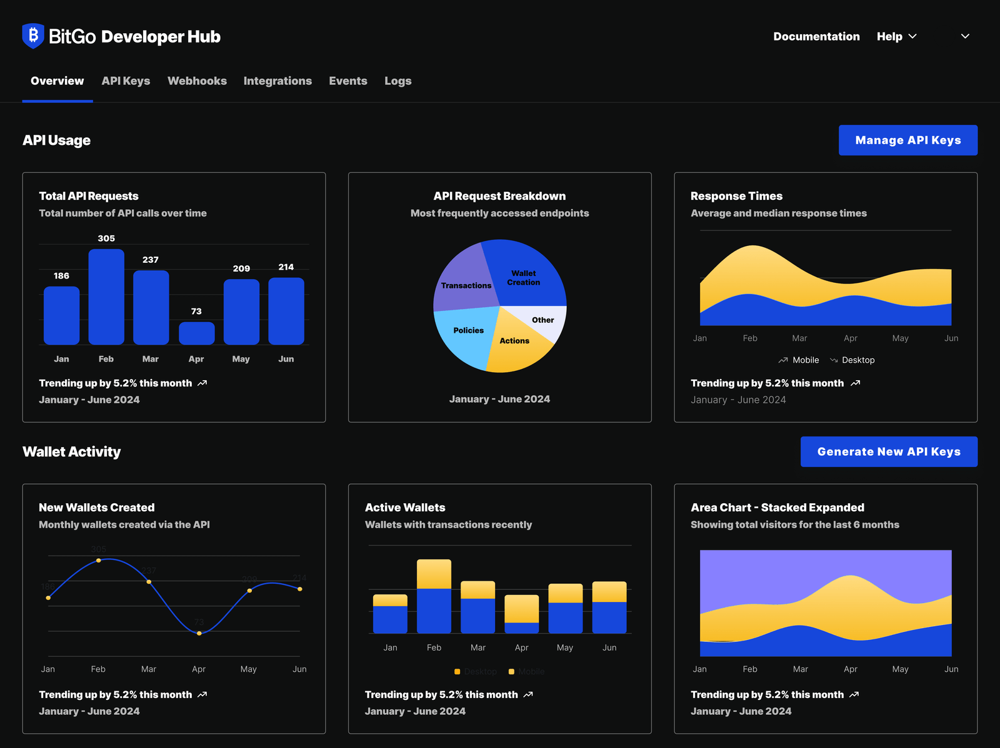

Product design for web that makes documentation and integration feel less like a maze.
Two open questions, no clear answer. As sole designer on BitGo's institutional crypto custody Dev Portal, I started with competitive research into how other custody and infrastructure products handled developer-facing docs. That research narrowed the redesign to two open questions: should the API reference read as a flat list or a task-oriented walkthrough, and should the account dashboard lead with visuals or with metrics.
Design both, test, then commit. I mocked up both directions for each question and weighed them against real developer tasks before committing to a direction. That process shaped the two screens that shipped: a redesigned account dashboard and an in-browser Playground where developers can generate API keys and test calls without leaving the docs.